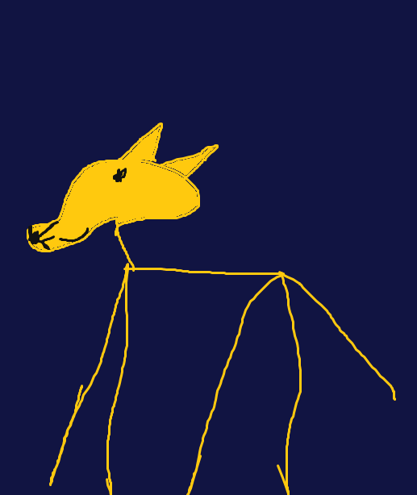

Local Photography is a business that helps young photographers fulfill their dreams. We believe that anyone can capture wonderful images given the right practice. Below are some stunning examples of what our photographers have captured.
Most of the artists featured below did not even know what a camera was before the came into Local Photography. Here at Local Photography, we pride ourselves on our ability to meet students at their level, no matter where that may be.

